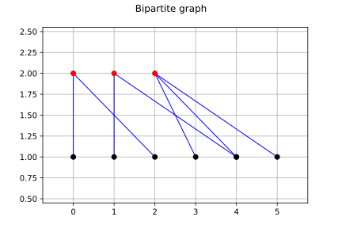

BipartiteGraph¶
(Source code, svg)
{kind=link}

- class BipartiteGraph(*args)¶
Bipartite red/black graph.
- Parameters:
- sequencesequence of
Indices Cliques of the red nodes.
- sequencesequence of
Methods
draw()Draw the graph.
Accessor to the graph black nodes.
Accessor to the object's name.
getName()Accessor to the object's name.
Accessor to the graph red nodes.
hasName()Test if the object is named.
setName(name)Accessor to the object's name.
getSize
getStride
Notes
A bipartite graph is an undirected graph in which the nodes can be colored in two colors such that no edge has its two ends with the same colors. Here we force the
![n]() red nodes to be numbered in consecutive order from 0 to
red nodes to be numbered in consecutive order from 0 to ![n-1]() and for each red node we give the list of black nodes that are the other end of the edges starting from this red node.
and for each red node we give the list of black nodes that are the other end of the edges starting from this red node.Examples
>>> import openturns as ot
Create a bipartite graph:
>>> graph = ot.BipartiteGraph([[1, 3], [2, 0], [5, 4]]) >>> graph [[1,3],[2,0],[5,4]]
Use some functionalities:
>>> graph[1] = [3, 4] >>> graph [[1,3],[3,4],[5,4]]
- __init__(*args)¶
- draw()¶
Draw the graph.
- Returns:
- grapha
Graph View of the bipartite graph as a set of red nodes linked to black nodes.
- grapha
- getClassName()¶
Accessor to the object’s name.
- Returns:
- class_namestr
The object class name (object.__class__.__name__).
- getName()¶
Accessor to the object’s name.
- Returns:
- namestr
The name of the object.
- hasName()¶
Test if the object is named.
- Returns:
- hasNamebool
True if the name is not empty.
- setName(name)¶
Accessor to the object’s name.
- Parameters:
- namestr
The name of the object.